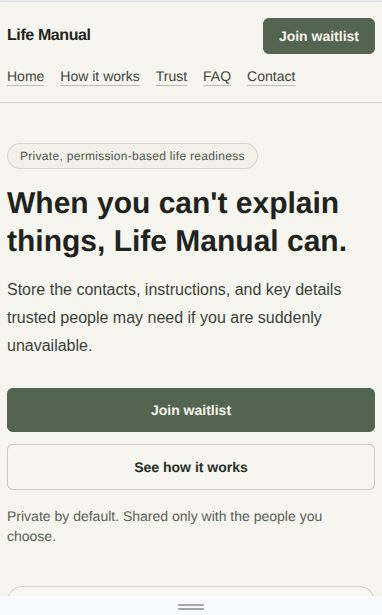
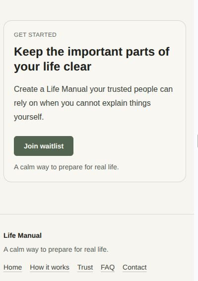

Case Study
Life Manual
Life Manual is a shipped waitlist landing-page product designed to communicate a serious idea with clarity: helping important information reach the right person at the right time.
Stack
Problem
Many people do not have a simple and trusted way to make sensitive information accessible when it is most needed. The product responds to that gap by framing a difficult real-life issue in a clear and approachable digital flow.
Product Direction
The interface needed to communicate seriousness without feeling heavy. The design direction focused on trust, clarity, and calm pacing so users could quickly understand the value and next step.
- Prioritized clear message hierarchy above visual complexity.
- Kept interaction points simple and predictable for confidence.
- Used restrained UI rhythm to support a trustworthy product tone.
My Contribution
I handled core frontend delivery in the team workflow, translating product direction into responsive, maintainable interface implementation.
- Built and refined the UI structure for readable content flow.
- Implemented responsive behavior across common mobile and desktop breakpoints.
- Supported implementation consistency and frontend quality during team iteration.
Visual Proof




Why It Matters
This project has human value because it addresses a serious need through a clear and trustworthy product surface, not just visual presentation.
As proof of work, it shows my ability to build calm, responsive interfaces for meaningful use cases while keeping product communication precise and practical.